5
用移动平均和自回归模型进行预测
这一章是关于基于移动平均和自回归的时间序列建模。这包括一大套在不同学科中非常流行的模型，包括计量经济学和统计学。我们将讨论自回归和移动平均模型，以及结合这两种模型的其他模型，如 ARMA、ARIMA、VAR、GARCH 等。
这些模型仍然备受推崇，并找到了它们的应用。然而，许多新的模型已经涌现出来，它们被证明是有竞争力的，甚至优于这些简单的模型。然而，在其主要应用中，在单变量预测中，简单模型通常提供准确或足够准确的预测，因此这些模型构成了时间序列建模的主体。
我们将讨论以下主题:
- 什么是古典模型？
- 移动平均和自回归
- 型号选择和订购
- 指数平滑法
- 阿奇和加尔奇
- 向量自回归
- Python 库
- 统计模型
- Python 实践
- 用 Python 建模
我们将从经典模型的介绍开始。
什么是古典模型？
在这一章中，我们将讨论具有悠久传统特征的模型，这些模型植根于统计学和数学。它们在计量经济学和统计学中被大量使用。
虽然统计学和机器学习方法之间有相当多的重叠，并且每个社区都在吸收其他社区的工作，但仍然有一些关键的差异。尽管统计学论文仍然是压倒性的形式和演绎，但机器学习研究人员更加务实，依赖于模型的预测准确性。
我们已经在第一章、Python 时间序列介绍中讨论了时间序列模型的早期历史。在这一章中，我们将讨论移动平均线和自回归预测方法。这些方法在 20 世纪早期被引入，并在 1970 年由 George Box 和 Gwilym Jenkins 在他们的书《时间序列分析预测和控制》中推广。至关重要的是，在他们的书中，Box 和 Jenkins 将 ARIMA 模型形式化，并描述了如何将其应用于时间序列预测。
许多时间序列表现出趋势和季节性，而本章中的许多模型假设平稳性。如果一个时间序列是平稳的，它的均值和标准差在一段时间内保持不变。这意味着时间序列没有趋势，也没有周期性变化。
因此，去除不规则成分、趋势和季节波动是应用这些模型的一个内在方面。然后，这些模型预测去除季节性和趋势后剩下的是什么:商业周期。
因此，要应用经典模型，通常需要将时间序列分解成不同的部分。因此，经典模型通常应用如下:
- 平稳性测试
- 差异[如果检测到平稳性]
- 拟合方法和预测
- 再加上趋势和季节性
本章中的大多数方法只与单变量时间序列有关。虽然已经提出了对多变量时间序列的扩展，但它们不如单变量版本受欢迎。单变量时间序列由一个向量组成，换句话说，是一个随时间变化的值。不过我们会在本章最后看到向量自回归 ( VAR )，它是对多元时间序列的扩展。
另一个重要的考虑因素是，大多数经典模型是线性的，这意味着它们假设同一时间的值之间以及不同时间步长的值之间的依赖关系是线性的。实际上，本章中的模型适用于一系列平稳的时间序列。这意味着随着时间的推移，分布是相同的。这方面的例子是温度随时间的变化。这些模型在可用数据量很小的情况下特别有价值，因此非线性模型中的额外估计误差在精度方面支配任何潜在增益。
然而，平稳性假设意味着本章模型的应用仅限于具有这种特性的时间序列。或者，我们必须预处理我们的时间序列来增强平稳性。相比之下，非线性时间序列分析和预测的统计方法的发展就不那么突出了；然而，有一些模型，如阈值自回归模型(我们不会在这里介绍)。
最后，需要指出的是，虽然第一种方法是合理的，但许多时间序列(如温度)可以通过基于物理学的高维大气模型比统计模型更准确地预测。这说明了复杂性的要点:本质上，建模是浓缩一组假设，并用参数将它们形式化。
现实世界的时间序列来自复杂的过程，可能是非线性和非平稳的，描述它们的方式不止一种，每种方式都有其优缺点。因此，我们可以把一个建模问题看作是许多参数，或者仅仅是一个或几个参数。在下面的专门章节中，我们将讨论基于参数数量和准确性从一组备选方案中选择模型的问题。
如今，非线性模型来自不同的研究方向，要么是神经网络，要么是更广泛的机器学习领域。我们将在第 10 章、中看到针对时间序列的深度学习中的神经网络，我们将在第 7 章、中讨论并应用针对时间序列的最新机器学习模型。
移动平均和自回归
经典模型可以分为模型族——移动平均线 ( MA )、自回归 ( AR )模型、ARMA 和 ARIMA。这些模型被许多数学家和统计学家正式化并在书籍和论文中推广，包括 Peter Whittle (1951)和 George Box 和 Gwilym Jenkins (1970)。但是让我们早点开始。
移动平均线标志着现代时间序列预测的开始。在移动平均线中，数值的平均值(通常是算术平均值)取自过去特定数量的时间点(时间范围)。
更正式的说法是，简单移动平均线，即 k 个点的一段时间内的未加权平均值，公式如下:
其中xT27】I 代表观察到的时间序列。
移动平均可以用来平滑时间序列，从而消除短期内出现的噪声和周期性波动，有效地充当低通滤波器。因此，正如数学家雷金纳德·胡克在 1902 年的一份出版物中指出的，移动平均线可以用来隔离趋势和振荡成分。他将趋势定义为当振荡被忽略时，一个序列移动的方向。
移动平均线可以平滑趋势，并在时间序列的历史上循环；然而，作为一个模型，移动平均线也可以用来预测未来。时间序列是序列当前值与观察值(误差项)的线性回归。订单 q 、 MA(q) 的移动平均模型可以表示为:

其中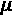为 x t (通常假设为 0)的平均值(期望值) 为参数，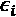为随机噪声。
为参数，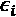为随机噪声。
胡克在剑桥接受教育，在英国农业、渔业和食品部的统计部门工作。他是一名业余统计学家，撰写气象学和社会经济话题，如工资、结婚率和贸易，以及作物预测。
AR 技术的发明可以追溯到英国统计学家 Udny Yule 的一篇论文，他是 Hooker 的一个私人朋友，在 1927 年(关于一种调查扰动时间序列的周期性的方法，特别参考了 Wolfer 的太阳黑子数)。一个自回归模型根据其自身的滞后值回归变量。换句话说，该值的当前值由使用线性组合的前一个值驱动。
黑子的变化是高度周期性的，正如我们在这张黑子观测随时间变化的曲线图中所看到的那样(通过 statsmodels 数据实用程序加载):
图 5.1:按年份划分的太阳黑子观测
Yule 公式化了一个由噪音驱动的线性模型，作为对太阳黑子数的应用，太阳外壳上黑点的计数。这些斑点起源于大爆炸，表明太阳的磁活动，以及太阳耀斑等现象。
这是两张根据太阳黑子数量显示的低太阳活动和高太阳活动的图片(来自 NASA):
图 5.2:太阳活动
今天，我们知道太阳周期是太阳磁活动在高磁活动(太阳活动最大值)和低磁活动(太阳活动最小值)之间近 11 年的周期性变化。在高点，爆炸(太阳耀斑)可以将带电粒子释放到太空中，潜在地危及地球上的生命。
尤尔在伦敦大学学院学习工程学，在波恩和海因里希·赫兹一起工作，回到 UCL 和卡尔·皮尔逊一起工作，后来被提升为 UCL 的助理教授。在 UCL 大学获得统计学职位后，他去了剑桥。人们记得他的《统计学》一书《统计学理论导论》，该书于 1911 年首次出版，历经多个版本，以及他对今天被称为优先连接的过程的描述，在这一过程中，网络中新数量向节点的分配与节点已经拥有的数量一致；这有时被称为“越富越富”
安德雷·柯尔莫哥洛夫在 1931 年定义了术语平稳过程，尽管路易斯·巴奇列尔在更早的时候(1900 年)用不同的术语引入了类似的定义。平稳性由三个特征定义:
- 有限变化
- 常数平均值
- 恒定变化
恒定变化是指时间序列在一个窗口内两点之间的变化在时间上是恒定的: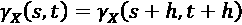，尽管它可以随着窗口的大小而变化。
这是弱平稳性。在文献中，除非另有说明，通常平稳性是指弱平稳性。严格平稳性意味着时间序列的概率密度函数不随时间变化。换句话说，在严格平稳性下，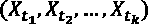上的联合分布与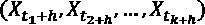上的联合分布相同。
1938 年，挪威数学家 Herman Ole Andreas Wold 描述了平稳时间序列的分解。他观察到，平稳时间序列可以表示为确定性成分(自回归)和随机成分(噪声)的总和。这种分解今天以他的名字命名为沃尔德分解。
这导致了阶为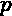、 AR(p) 的自回归模型的公式化，如下所示:
其中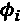为模型参数， c 为常数，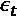表示噪声。在这个等式中， p 是时间序列的连续值之间的自相关的度量。
这项工作后来在 1951 年由新西兰人 Peter whitt le(Wold 是他的顾问)在一篇博士论文中推广到多元时间序列(“时间序列中的假设检验】)。Peter Whittle 还将 AR 和 MA 模型整合为一体，称为自回归移动平均线 ( ARMA )。这是时间序列建模历史上的又一个里程碑，汇集了尤尔和胡克的工作。
ARMA 模型由两种滞后值组成，一种是自回归分量，另一种是移动平均分量。因此，我们写 ARMA(p，q) ，其中第一个参数 p 表示自回归的阶，第二个参数 q 表示移动平均的阶，如下所示:
ARMA 假设序列是平稳的。在实践中，为了确保平稳性，必须应用预处理。
模型参数是通过最小二乘法估计的，直到 George Box 和 Gwilym Jenkins 推广了他们的参数最大似然估计方法。
乔治·博克斯不仅是经典时间序列预测的最有影响力的人物之一，也是更广泛的统计学领域的最有影响力的人物之一。在没有完成化学学业的情况下，他应征参加了第二次世界大战，为军队进行毒气实验，并自学统计学进行分析。
战争结束后，他在伦敦大学学院学习数学和统计学，并在卡尔·皮尔逊之子埃贡·皮尔逊的指导下完成了博士学位。他后来在普林斯顿领导了一个研究小组，然后在威斯康星大学麦迪逊分校建立了统计系。
Box 和 Jenkin 在 1970 年出版的《时序分析:预测和控制》一书中概述了许多时序预测和季节调整的应用实例。所谓的 Box-Jenkins 方法是最流行的预测方法之一。他们的书还包含了对自回归综合移动平均模型( ARIMA )的描述。
ARIMA(p，d，q)包括一个数据预处理步骤，称为积分，以使时间序列平稳，这是通过减去刚刚过去的值来替换值，这种转换称为差分。
模型积分由 d 参数化，d 是当前值和先前值之间的差值的次数。如上所述，这三个参数代表模型的三个部分。
有一些特殊情况；ARIMA(p，0，0)代表 AR(p)，ARIMA(0，d，0)代表 I(d)，ARIMA(0，0，q)代表 MA(q)。I(0)有时被用作一种惯例来指代平稳的时间序列，它不需要任何差分就可以是平稳的。
虽然 ARIMA 型模型有效地考虑了平稳过程，但是作为 ARMA 模型的扩展而开发的季节性自回归综合移动平均模型( SARIMA )可以描述在季节内和跨季节表现出非平稳行为的过程。
季节性 ARIMA 模型通常表示为 ARIMA(p，D，q)(P，D，Q)m。这些参数值得进一步解释:
- m 表示一个季节的周期数
- p，D，Q 参数化季节性部分的自回归、积分和移动平均分量
- p，d，q 指的是我们之前讨论过的 ARIMA 项
p 是时间序列的连续季节成分之间的自相关性的量度。
我们可以把季节性的部分写出来，这样更清楚。季节性自回归， SAR ，可以表述为:
同样的，季节性移动平均线， SMA ，可以写成如下:
请注意，这些组件中的每一个都将使用一组不同的参数。
例如，模型 SARIMA(0，1，1)(0，1，1)12 过程将包含一个非季节性 MA(1)项(具有相应的参数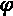)和一个季节性 MA(1)项(具有相应的参数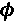)。
型号选择和订购
ARMA 中的参数 q 通常为 3 或更小，但这更多地反映了计算资源而不是统计数据。今天，为了设置参数 p 和 q，我们通常会查看自相关和偏自相关图，从中可以看到每个滞后的相关峰值。
当我们有不同的模型时，比如说不同 p 和 q 的模型，每个都在相同的数据集上训练，我们如何知道应该使用哪一个呢？这就是模型选择的作用。
模型选择是决定竞争模型的方法。模型选择中的一个主要观点是奥卡姆剃刀，它是以生活在大约 1287 年到 1347 年间的英国方济各会修士和奥卡姆的经院哲学家威廉的名字命名的。
根据奥卡姆剃刀理论，在选择不同的解决方案时，人们应该选择假设最少的解释。奥卡姆基于这种想法认为，神的干预原则是如此简单，奇迹是一个吝啬的解释。这条规则在拉丁语中也称为“ lex parsimoniae ”，表示模型应该是简约的，这意味着它应该简单，但具有很高的解释力。
在科学中，出于可证伪性原则，更简单的解释更受青睐。科学解释越简单，就越容易被检验，甚至可能被反驳——这赋予了模型科学的严谨性。
ARMA 等模型通常用最大似然估计 ( MLE )进行估计。在 MLE 中，这意味着最大化一个似然函数，使得给定模型的参数，观察到的数据是最有可能的。
最大似然法最常用的模型选择标准之一是赤池信息标准 ( AIC )，由赤池裕土谷于 1973 年首次以英文出版。
AIC 从最大似然法中取对数似然 l 和模型中的参数数量 k 。
也就是说，AIC 等于参数数量的两倍减去对数似然的两倍。在模型选择中，我们更喜欢 AIC 最低的模型，这意味着它的参数很少，但对数似然性也很高。
对于 ARIMA 模型，我们可以写得更具体一些:
我省略了参数 d，因为它没有引入额外的估计。
几年后(1978 年)，吉迪恩·施瓦茨(Gideon Schwarz)为模型选择提出了贝叶斯信息标准(T1)(BIC)，看起来非常像 AIC。它还需要 N ，数据集中样本的数量:
根据 BIC 的说法，我们想要一个参数少、对数似然高的模型，但也需要少量的训练样本。
指数平滑法
指数平滑可以追溯到西蒙·泊松的工作，是一种使用指数窗口函数平滑时间序列数据的技术，该函数可用于预测具有季节性和趋势的时间序列。
最简单的方法，简单指数平滑， SES ， s t 时间序列 x t 可以表示为:
其中 是指数平滑因子(介于 0 和 1 之间的值)。
是指数平滑因子(介于 0 和 1 之间的值)。
本质上，这是权重为 α 和 的加权移动平均线。你可以把第二项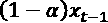看作是递归的，其中，当展开时，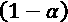不断地自我相乘——这是指数项。
的加权移动平均线。你可以把第二项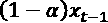看作是递归的，其中，当展开时，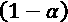不断地自我相乘——这是指数项。
参数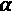控制平滑值在多大程度上由当前值和先前值决定。与移动平均线一样，这个公式的效果是结果变得更加平滑。
有趣的是，John Muth 在 1960 年表明，SES 为时间序列提供了最佳预测，其中，在每个时间步长，值从其前一个值随机离开一步，并且步长在大小和噪声上独立且相同地分布。这种时间序列被称为随机游走，有时，波动的股票价格被假设为遵循这样的行为。
另一种指数平滑方法 Theta 方法，由于在 2000 年的 M3 竞赛中表现出色，因此从业者对其特别感兴趣。M3 竞赛以斯皮罗斯·马克里达基斯的名字命名，其组织者是尼科西亚大学教授兼未来研究所所长，是一场从微观经济、工业、金融、人口统计和其他领域对 3003 个时间序列进行预测的竞赛。其主要结论之一是，非常简单的方法可以很好地执行单变量时间序列预测。M3 竞赛被证明是预测的分水岭时刻，提供了基准和最先进的 ( SOTA )的，尽管自那以后 SOTA 已经发生了巨大的变化，正如我们将在第 7 章、时间序列的机器学习模型中看到的那样。
西塔法是由瓦西里斯·阿西马科普洛斯和康斯坦丁诺·尼科洛普洛斯于 2000 年提出的，并由罗布·海因德曼和叶鬼·比拉于 2001 年再次提出。Theta 模型可以理解为带漂移的简单指数平滑 ( SES )。
该方法基于将去季节性数据分解为两条线。第一条所谓的“theta”线估计长期分量，即趋势，然后取该趋势和 SES 的加权平均值。
让我们更正式地陈述这一点！趋势部分预测如下:
在这个方程中， c 是截距，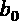是乘以时间步长的系数，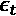是残差。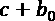可以通过普通最小二乘法拟合。
Theta 的公式将这一趋势作为加权和添加到 SES 中:
这里，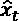是在时间步 t 对 X 的预测。
最流行的指数平滑法之一是霍尔茨-温特斯法。芝加哥大学教授查尔斯·霍尔茨(Charles Holtz)首先发表了双指数平滑法(1957 年),允许根据趋势和水平进行预测。他的学生彼得·温特斯在 1960 年扩展了这种方法来捕捉季节性(“通过指数加权移动平均数预测销售额”)。甚至在后来，Holtz-Winters 平滑法被扩展到多个季节(n 阶平滑法)。
为了应用霍尔茨-温特斯方法，我们首先去除趋势和季节性。然后我们预测时间序列，并添加回季节性和趋势。
我们可以区分该方法的加法和乘法变体。趋势和季节性可以是相加的，也可以是相乘的。
加性季节性是独立于序列值的季节性相加。当季节效应随着时间序列中的值(或趋势)而减少或增加时，会按比例添加一个倍增的季节分量。目视检查有助于在两种变化之间做出决定。
霍尔茨-温特斯方法也被称为三重指数平滑法，因为它应用指数平滑法三次，我们将会看到。霍尔茨-温特斯方法包含三个部分:
- 每个时间点的估计水平，Lt——这可以是平均值
- 趋势分量 T
- 季节性Stt与 m 季节(一年中的季节数)
对于加性趋势和季节性，用数学术语来说，霍尔茨-温特斯预测值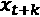定义为:
级别更新如下:
我们正在根据两项的加权平均值更新当前级别，其中 是两项之间的权重。这两个术语是序列的先前水平和去季节化值。
是两项之间的权重。这两个术语是序列的先前水平和去季节化值。
在此等式中，我们通过除以季节性来消除序列的季节性:
前一个趋势分量累加到前一个级别，如下所示:
最后,(倍增)季节性更新如下:
我们可以根据需要将这些方程转换成加法变量。更详细的处理超出了本书的范围，我们将把它留在这里。
阿奇和加尔奇
麻省理工学院经济学教授罗伯特·恩格尔(Robert F. Engle)提出了一个时间序列预测模型(1982 年)，他将其命名为 ARCH(自回归条件异方差模型)。
对于金融机构来说，风险价值，即特定时间段内的金融风险水平，是风险管理的一个重要概念。因此，考虑资产回报的协方差结构是至关重要的。这就是 ARCH 所做的，并解释了它的重要性。
事实上，为了表彰他在时间序列计量经济学领域的贡献，恩格尔与我们之前遇到的克莱夫·格兰杰一起获得了 2003 年诺贝尔经济学奖(诺贝尔经济学奖)。引文中特别提到了他在 ARCH 方面的开创性工作。
虽然在 ARMA 型模型中，收益被建模为独立的，并随时间同分布，但 ARCH 通过参数化在不同频率观察到的收益之间的高阶相关性，允许时变(异方差)误差项。
在 ARCH 中，残差被表示为由随机变量 z t 和标准差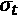组成，两者都是时间相关的: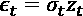。
时间 t 处残差的标准偏差根据之前点的序列残差进行建模:
其中 q 是方差所依赖的先前时间点的数量。
可以使用最小二乘法来确定模型 ARCH(q)。
GARCH ( 广义 ARCH )诞生于蒂姆·博勒斯列夫(1986)和斯蒂芬·泰勒(1986)两人独立扩展恩格尔模型使其更具一般性之时。GARCH 和 ARCH 的主要区别在于残差来自 ARCH 模型，而不是来自自回归模型 AR。
一般来说，在应用 GARCH 或 ARCH 模型之前，要进行同方差的统计检验，换句话说，方差是否随时间保持不变。通常使用的是 ARCH-LM 检验，它使用时间序列没有 ARCH 效应的零假设。
向量自回归
本章介绍的所有预测方法都是针对单变量时间序列的，也就是说，时间序列只包含一个与时间相关的变量，一个向量。在实践中，我们通常比我们的单个测量序列知道更多。
例如，如果我们的时间序列是关于冰淇淋销售的数量，我们可能知道温度或游泳衣的销售。我们可以预计冰淇淋的销售与温度高度相关，事实上，我们可以预计当温度高时，冰淇淋的消费量会越来越大。同样，我们可以推测，游泳衣的销售要么与冰淇淋的销售同时发生，要么早于或晚于冰淇淋的销售。
向量自回归模型可以跟踪几个变量随时间变化的关系。他们可以捕捉时间序列对当前时间戳之前的值向量的线性依赖，将 ar 模型推广到多元时间序列。
风险值模型的特征在于它们的顺序，顺序指的是进入模型的先前时间点的数量。最简单的情况是 VAR(1 ),其中模型仅采用序列的一个滞后，可表述如下:
其中 c 为常数，直线的截距，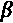为模型的系数，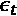为 t 点的误差项，xT9】t 和 c 为长度为 k 的向量，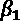为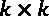矩阵。
p 阶模型 VAR(p)表示为:
VAR 假设误差项的均值为 0，并且误差项之间没有序列相关性。
就像向量自回归是自回归的多变量推广一样，向量 ARIMA ( VARIMA )是单变量 ARIMA 模型对多变量时间序列的扩展。虽然它早在 1957 年就已经正式化了，但是可用的软件实现只是在很久以后才出现。
在下一节中，我们将看看 Python 中的几个库，它们可以用于经典模型的预测。
Python 库
Python 中有一些流行的经典时间序列建模库，但是到目前为止最流行的是 statsmodels。下图比较了图书馆在 GitHub 上的受欢迎程度:
图 5.3:用于经典时间序列预测的 Python 库的流行程度
Statsmodels 显然是这些库中最受欢迎的。我只选择了那些被积极维护的库，它们直接实现了算法，而不是从其他库中导入。例如，SkTime 或 Darts 库提供了传统的预测模型，但它们不是在那里实现的，而是在 statsmodels 中实现的。
pmdarima(最初是金字塔-arima)包含一个参数搜索，以帮助使最佳 arima 模型适合单变量时间序列。Anticipy 包含许多模型，如指数衰减和阶跃模型。Arch 实现了金融计量经济学的工具和自回归条件异方差 ( ARCH )的功能。
虽然不像 Scikit-Learn 那样活跃，而且只有几个人维护，但 statsmodels 是传统统计学和计量经济学时间序列方法的首选库，比机器学习更强调参数估计和统计测试。
统计模型
statsmodels 库可以帮助估计统计模型并执行统计测试。它建立在 SciPy 和 NumPy 之上，有很多统计函数和模型。
下表说明了与本章相关的一些建模类:
|
班级 |
描述 |
|
|
单变量自回归模型 |
|
|
自回归综合移动平均(ARIMA)模型 |
|
|
霍尔特·温特指数平滑法 |
|
|
简单指数平滑 |
图 5.4:在 statsmodels 中实现的一些模型
ARIMA 类还通过一个search _ order参数——带有季节性成分的 ARIMA——为萨里玛提供功能。根据定义，ARIMA 也支持 MA、AR 和 differencing(集成)。
还有一些其他的模型，比如 MarkovAutoregression，但是我们不会讨论所有这些模型——我们将选择一个进行讨论。
下面列出了一些其他有用的函数:
|
功能 |
描述 |
|
|
科维亚特科夫斯基-菲利普斯-施米特-申平稳性检验 |
|
|
扩充的迪基-富勒单位根检验 |
|
|
互相关函数 |
|
|
部分自相关估计 |
|
|
恩格尔自回归条件异方差检验(ARCH)，也称为 ARCH-LM 检验 |
|
|
永盒 Q 统计量 |
|
|
使用移动平均值的季节分解 |
|
|
取消矢量趋势 |
图 5.5:stats models 中有用的函数
按照惯例，我们像这样导入统计模型:
import statsmodels.api as sm
这些 statsmodels 算法也可以通过 SkTime 获得，这使得可以通过类似于 Sklearn 接口的接口获得。
这应该足够做一个简单的概述了。让我们进入建模本身！
Python 实践
正如本章介绍中提到的，我们将使用 statsmodels 库进行建模。
要求
在本章中，我们将使用几个库，我们可以从终端(或者类似地从 anaconda navigator)快速安装这些库:
pip install statsmodels pandas_datareader
我们将从 Python(或 IPython)终端执行命令，但同样，我们也可以从 Jupyter 笔记本(或不同的环境)执行它们。
让我们开始建模吧！
用 Python 建模
我们将使用 Yahoo finance 的股票行情数据集，我们将通过 yfinance 库下载该数据集。我们将首先加载数据集，进行一些快速探索，然后我们将构建本章中提到的几个模型。
我们将载入一系列标准普尔存托凭证(SPDR 标准普尔 500 ETF 信托):
from datetime import datetime
import yfinance as yf
start_date = datetime(2005, 1, 1)
end_date = datetime(2021, 1, 1)
df = yf.download(
'SPY',
start=start_date,
end = end_date
)
我们必须指出日期范围和股票代码。每日价格包括开盘价、收盘价和其他价格。我们将按公开价格工作。
索引列已经是pandas datetime index，所以我们不必转换它。让我们来策划这个系列！
import matplotlib.pyplot as plt
plt.title('Opening Prices between {} and {}'.format(
start_date.date().isoformat(),
end_date.date().isoformat()
))
df['Open'].plot()
plt.ylabel('Price')
plt.xlabel('Date');
这给了我们下图:
图 5.6:标准普尔存托凭证价格随时间的变化
由于这是每日数据，并且一年中有 253 或 252 个工作日，我决定将数据重新采样为每周数据，并使每年保持一致。
df1 = df.reset_index().resample('W', on="Date")['Open'].mean()
df1 = df1[df1.index.week < 53]
有些年份有 53 周。我们处理不了，所以我们会去掉第 53 周。我们现在有 16 年 52 周的每周数据。
最后一个修正:statsmodels 可以使用与 DateTimeIndex 关联的频率信息；然而，这通常不被设置，并且df1.index.freq 是None。所以，我们自己来设置:
df1 = df1.asfreq('W').fillna(method='ffill')
如果我们现在检查，df1.index.freq就是<Week: weekday=6>.
设置频率可能会导致值丢失。因此，我们通过fillna()操作，从最后一个有效值继续寻找缺失值。如果我们不这样做，一些模型将不会收敛并返回 NaN(不是一个数字)值而不是预测值。
现在，我们需要了解一下模型阶数的合理范围。我们来看看自相关和偏自相关函数:
import statsmodels.api as sm
fig, axs = plt.subplots(2)
fig.tight_layout()
sm.graphics.tsa.plot_pacf(df1, lags=20, ax=axs[0])
sm.graphics.tsa.plot_acf(df1, lags=20, ax=axs[1])
这给了我们下图:
图 5.7:部分自相关和自相关
这些图表显示了时间序列在长达 20 个时间步长的滞后时与其自身的相关性。r 或值接近 0 意味着滞后处的连续观测值彼此不相关。相反，接近 1 或-1 的相关性表明在滞后的这些观察值之间存在很强的正相关或负相关。
自相关和偏自相关都返回置信区间。如果超出置信区间(用阴影区域表示)，则相关性是显著的。
我们可以看到，滞后 1 的部分自相关非常高，滞后越大越低。对于所有滞后，自相关是显著的和高的，但是随着滞后增加，显著性下降。
让我们继续讨论自回归模型。从现在开始，我们将使用 statsmodels 建模功能。正如您将看到的，界面非常方便。
我们不能直接使用自回归模型，因为它需要时间序列是平稳的，这意味着均值和方差在一段时间内是恒定的——没有季节性，没有趋势。
我们可以使用 statsmodels 实用程序查看时间序列的季节性和趋势:
from statsmodels.tsa.seasonal import seasonal_decompose
result = seasonal_decompose(df, model='additive', period=52)
result.plot()
我们将周期设置为 1，因为每个数据点(行)对应一年。
让我们看看组件是什么样子的:
图 5.8:时间序列的季节性分解
第一个次要情节是原始的时间序列。在这个数据集中既有季节性也有趋势性，这你可以在次要情节中看到。
如前所述，我们需要一个平稳序列来建模。为了建立平稳性，我们需要去除季节和趋势成分。我们也可以去掉之前估计的季节性或趋势性因素。或者，我们可以在 statsmodels 中使用包装器功能，或者在 ARIMA 中设置 d 参数。
我们可以使用扩展的迪基-富勒和 KPSS 测试来检查平稳性:
from arch.unitroot import KPSS, ADF
ADF(df1)
我们可以使用statsmodels.tsa.stattools.adfuller或statsmodels.tsa.stattools.kpss，但是我们更喜欢 ARCH 库版本的便利性。我们让用户来检查 KPSS 测试的输出。我们得到以下输出:
图 5.9:KPSS 平稳性测试的输出
给定 p 值为 0.997，我们可以拒绝单位根的零假设，我们得出结论，我们的过程是弱平稳的。
那么我们如何找到好的差值呢？我们可以使用 pmdarima 库来实现这个目的，其中有一个函数正好可以实现这个目的:
from pmdarima.arima.utils import ndiffs
# ADF Test:
ndiffs(df1, test='adf')
我们得到的值是 1。对于 KPSS 和 PP 测试，我们会得到相同的值。这意味着我们可以消除第一个差异。
让我们从一个自回归模型开始。
提醒一下，ARIMA 是用参数 p，d，q 来参数化的，其中:
- p 代表自回归模型:AR(p)
- d 代表积分
- q 代表移动平均线:MA(q)
因此，ARIMA(p，d，0)是具有 d 阶差分的 AR(p)
令人欣慰的是，statsmodels 会检查并警告平稳性假设是否不成立。让我们尝试运行以符合以下 AR 模型:
mod = sm.tsa.arima.ARIMA(endog=df, order=(1, 0, 0))
res = mod.fit()
print(res.summary())
UserWarning: Non-stationary starting autoregressive parameters found. Using zeros as starting parameters.
warn('Non-stationary starting autoregressive parameters'
因为我们已经知道我们需要一个 1 度的差，我们可以设置 d 为 1。再来一次吧。这一次，我们将使用STLForecast包装器，去除季节性并将其添加回去。这是必要的，因为 ARIMA 无法解决季节性问题:
from statsmodels.tsa.forecasting.stl import STLForecast
mod = STLForecast(
df1, sm.tsa.arima.ARIMA,
model_kwargs=dict(order=(1, 1, 0), trend="t")
)
res = mod.fit().model_result
print(res.summary())
我们得到这样的总结:
图 5.10:我们的 ARIMA 模型总结
这个结果摘要给出了所有的关键统计数据。我们看到模型是 ARIMA(1，1，0)。对数似然是-1965。我们还看到了 BIC 和 AIC 值，如果我们愿意，我们可以用它们来选择模型。
请注意，我们需要在这里设置trend="t"，以便模型包含一个常数。否则，我们将得到一个虚假的回归。
我们如何使用这个模型？我们来做一些预测吧！
STEPS = 20
forecasts_df = res.get_forecast(steps=STEPS).summary_frame()
这给了我们对未来 20 步的预测。
让我们想象一下！
ax = df1.plot(figsize=(12, 6))
plt.ylabel('SPY')
forecasts_df['mean'].plot(style='k--')
ax.fill_between(
forecasts_df.index,
forecasts_df['mean_ci_lower'],
forecasts_df['mean_ci_upper'],
color='k',
alpha=0.1
)
以下是我们得到的结果:
图 5.11:间谍股票代码的价格预测
实线是我们知道的数据。虚线代表我们对未来 20 年的预测。我们预测周围的灰色区域是 95%的置信区间。
这看起来不太糟。这是留给读者尝试不同参数的练习。有趣的变化是趋势参数和模型的顺序。
对于移动平均线，让我们创建不同的模型，看看它们预测的差异！
首先，我们将制作预测:
forecasts = []
qs = []
for q in range(0, 30, 10):
mod = STLForecast(
df1, sm.tsa.arima.ARIMA,
model_kwargs=dict(order=(0, 1, q), trend="t")
)
res = mod.fit()
print(f"aic ({q}): {res.aic}")
forecasts.append(
res.get_forecast(steps=STEPS).summary_frame()['mean']
)
qs.append(q)
forecasts_df = pd.concat(forecasts, axis=1)
forecasts_df.columns = qs
在循环中，我们迭代不同的 q 参数，选择 0、10 和 20。我们用这些 q 值估计移动平均模型，并预测未来 20 年。我们还打印对应于每个 q 的 AIC 值。这是我们得到的输出:
aic (0): 3989.0104184919096
aic (10): 3934.375909262983
aic (20): 3935.3355340835
现在，让我们以类似于之前的方式绘制三种预测:
ax = df1.plot()
plt.ylabel('SPY')
forecasts_df.plot(ax=ax)
这是新的情节:
图 5.12:使用不同 q 参数的预测
那么，这些模型中哪一个在统计学上更好呢？
让我们回到 AIC。AIC 值越低，给定对数似然和参数数量的模型越好。
在这种情况下，10 的阶数给出了最低的 AIC，根据这个标准，我们应该选择 q=10。当然，我们只尝试了三种不同的值。我将把它作为一个练习，为 q 提出一个更合理的参数值。
请注意，pmdarima 库具有查找最佳参数值的功能，而 SkTime 库提供了自动发现 arima 模型最佳阶数的实现:AutoARIMA。
让我们继续，使用指数平滑模型进行预测。
在循环中，我们迭代不同的 q 参数，选择 0、10 和 20。我们用这些 q 值估计移动平均模型，并预测未来 20 年。我们还打印对应于每个 q 的 AIC 值。这是我们得到的结果:
mod = sm.tsa.ExponentialSmoothing(
endog=df1, trend='add'
)
res = mod.fit()
让我们来看看未来 20 年的预测:
forecasts = pd.Series(res.forecast(steps=STEPS))
现在，让我们绘制预测图:
ax = df.plot(figsize=(12, 6))
plt.ylabel('SPY')
forecasts.plot(style='k--')
剧情是这样的:
图 5.13:指数平滑预测
到目前为止，我们只是看了 20 步预测的图表。我们仍然没有对我们的模型性能进行非常复杂的分析。让我们来看看错误！
为此，我们首先必须将数据集分为训练和测试两部分。我们可以提前 n 步预测并检查误差。我们只是将运行到某个时间点的时间序列作为训练数据，将之后的时间点作为测试数据，这样我们可以将预测与实际数据点进行比较:
from statsmodels.tsa.forecasting.theta import ThetaModel
train_length = int(len(df1) * 0.8)
tm = ThetaModel(df1[:train_length], method="auto",deseasonalize=True)
res = tm.fit()
forecasts = res.forecast(steps=len(df1)-train_length)
ax = df1.plot(figsize=(12, 6))
plt.ylabel('SPY')
forecasts.plot(style='k--')
剧情是这样的:
图 5.14:模型预测
虚线是预测。这似乎与时间序列的实际行为不太相符。让我们使用我们在前一章时间序列的机器学习简介中讨论过的一个误差度量来量化:
from sklearn import metrics
metrics.mean_squared_error(forecasts, df1[train_length:], squared=False)
我们得到一个值37.06611385754943。这是均方根误差(我们将squared参数设置为False)。
在预测比赛中，比如在 Kaggle 网站上，误差最小的获胜。在现实生活中，简约也很重要；然而，我们通常仍然以我们能得到的最低误差为目标。
还有更多的模型可以探索和使用，但是是时候结束这一章了。
摘要
在本章中，我们已经讨论了基于移动平均和自回归的时间序列预测。这个主题包括一大套在不同学科中非常流行的模型，如计量经济学和统计学。这些模型构成了时间序列建模的主体，并提供了最先进的预测。
我们已经讨论了自回归和移动平均模型，以及结合这两种模型的其他模型，包括 ARMA、ARIMA、VAR、GARCH 等。在练习环节中，我们将一些模型应用于股票价格数据集。